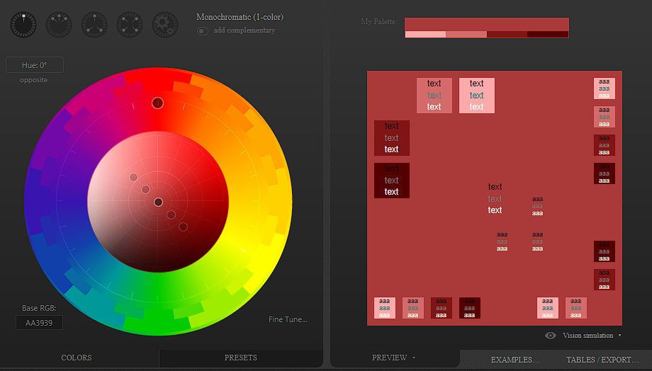

Combinação de Cores
Existem conceitos que devem ser respeitados ao escolher uma paleta de cores
Temperatura e Harmonia

A temperatura de cor se divide em cores quentes e frias.
As cores quentes, criam uma sensação de calor e proximidade. Já as cores frias, estão associadas a sensações mais calmas, de frescor e tranquilidade.
Cores Complementares

As cores complementares são as cores que apresentam o maior nível de contraste entre sí.
Cores Análogas

São cores com o menor contraste entre si, são no caso cores com maior harmonia entre si.
Cores Análogas mais uma Complementar

Esse é um caso de combinação de ambos os casos anteriores.
Essa tecnica faz uso de uma imagem com grande contraste e uma paleta de cores relacionadas.
Cores Análogas Relacionadas

Nesse tipo de harmonia, escolhemos duas cores análogas e depois pulamos uma terceira cor e escolhemos a quarta.
Cores Intercaladas

As cores intercaladas são o tipo menos usado, já que em às vezes não funciona tão bem assim.
Cores Triádicas

Técnica bastante utilizada tal qual garante uma grande riqueza de cores, onde escolhemos três pontos equidistantes.
Cores em Quadrado

Assim como o esquema triádico, nos permite selecionar quatro cores com um contraste razoável entre si.
Cores Tetrádicas

A técnica consiste em escolher dois pares de cores complementares, que não serão necessariamente análogas ou consecutivas, garantindo dois pares de cores, com bastante contraste entre si.
Monocromia

Neste caso temos uma hamornia bem diferente dos outros casos. Utilizamos apenas uma cor, variando apenas a sua saturação e seu brilho. Essa combinação normalmente gera pouco contraste entre as cores escolhidas, mas ainda assim gerando um resultado visual bem agradável aos olhos, conhecido como "degradê"
Ferramentas
Adobe Color
 Círculo Cromático Adobe
Círculo Cromático Adobe
Existe uma ferramenta muito útil criada pela Adobe para Harmonizar cores utilizando o círculo cromático, nele podemos utilizar métodos de cores como:
- Análogo
- Monocromático
- Tríade
- Complementar
- Dividir complementar
- Dividir complementar duas vezes
- Quadrado
- Composto
- Sombras
- Personalizado
Paletton

Ferramenta Paletton
Podemos utilizar outra ferramenta de gerador de paleta de cores chamada Paletton, muito útil que nos dá também exemplos em sites e outras aplicações.
Coolors
temos também a Ferramenta Coolors, uma ferramenta que nos dá paletas de cores aleatórias de forma muito rápida.